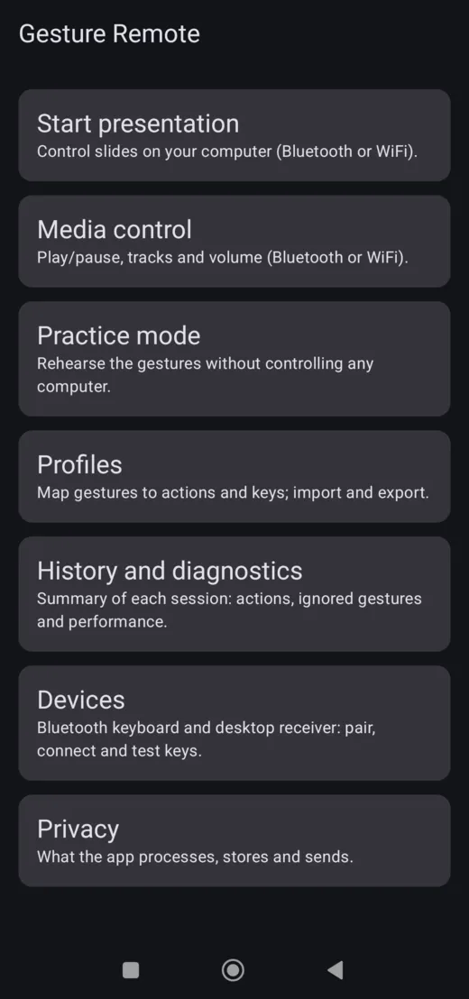
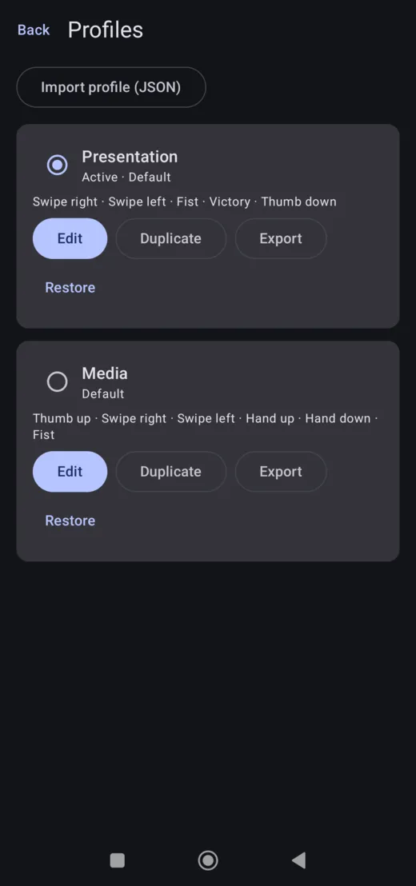
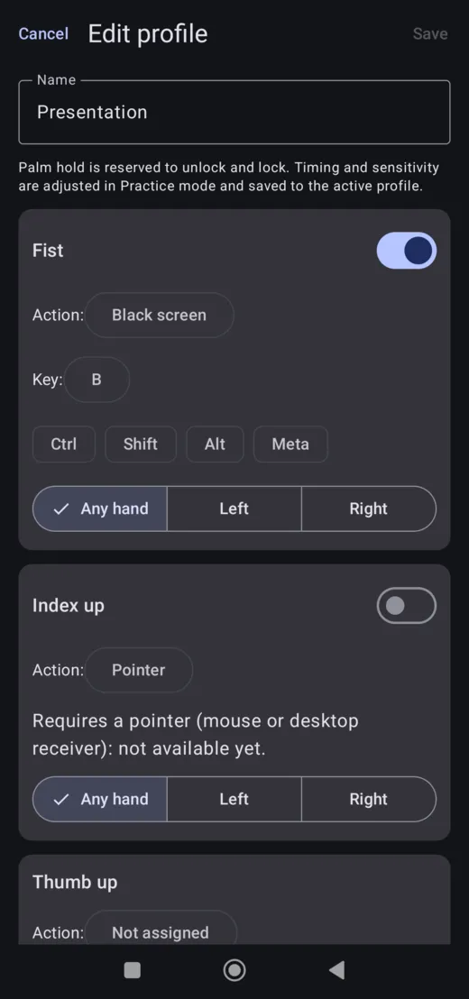
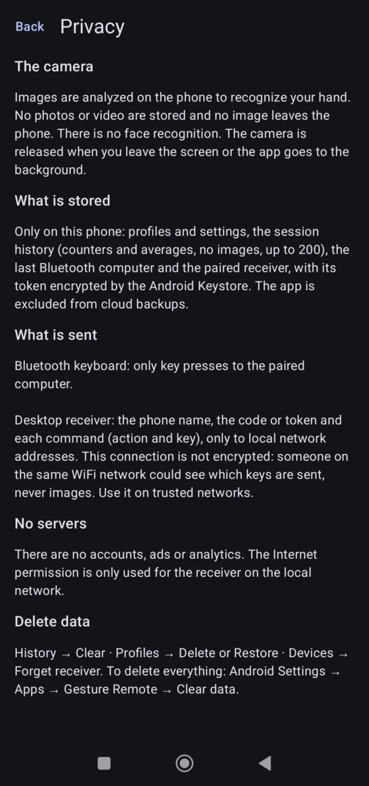

Technical demo · Android
Gesture Remote
On-device hand gesture recognition for keyboard control
A native Android app (Kotlin, Jetpack Compose) that tracks the user's hand with the front camera, recognizes deliberate gestures with an on-device machine-learning model and a temporal state machine, and turns them into key presses: as a Bluetooth keyboard or through a small desktop receiver on the local network. Typical uses are changing slides and controlling media playback.
All image processing happens on the phone. No frame is stored or sent anywhere.
Version 0.2.0 · Android 9 or later · 29.7 MB · works offline

Technical capabilities
What this project implements and can be checked in the app.
-
On-device computer vision
CameraX feeds frames to the MediaPipe Gesture Recognizer running locally. It provides 21 hand landmarks, handedness and seven static gestures, drawn live over the camera preview.
-
Temporal gesture engine
A state machine (locked, waiting, tracking, confirmed, cooldown) adds palm unlock, hold-to-confirm, per-gesture confidence thresholds, cooldowns and dropout tolerance. Swipes and up/down movements are derived from landmark trajectories. Pure Kotlin module with JVM unit tests.
-
Bluetooth HID keyboard
The phone registers as a Bluetooth keyboard through the Android
BluetoothHidDeviceAPI, with a custom HID report descriptor for regular keys and media keys. No software is needed on the computer. -
Local network receiver
A desktop receiver written in Go, discovered with mDNS. Pairing uses a 6-digit code; the resulting token is stored encrypted with the Android Keystore. Commands travel over WebSocket and are typed through a virtual keyboard (uinput on Linux).
-
Configurable profiles
Each gesture maps to an action and a key with modifiers, hand selection and sensitivity. Profiles are validated, persisted with DataStore and exported or imported as versioned JSON.
-
Diagnostics and privacy
A practice mode shows what is detected and why a gesture was ignored. Session history keeps only counters, frame rate and gesture-to-key latency (Room). English and Spanish interface.
Screenshots
Captured from the release build on a phone. Select an image to enlarge it. The control and practice screens, which show the live camera, are not included.
-
Home -

Profiles -

Gesture editor -

In-app privacy summary


How to test the application
Requires an Android phone with Android 9 or later and a front camera. No account, no Internet connection and no computer are needed for the practice mode.
- Download the APK on the Android phone using the button above.
- Open the downloaded file from the notification or the Downloads folder.
- Android may ask for permission to install apps from your browser or file manager. Grant it for that app, then return to the installer. Because the app is not installed from Google Play, Android may show an additional notice before installing.
- Install and open Gesture Remote, then allow camera access when asked.
- Follow the suggested demonstration below.
Suggested demonstration
Practice mode (phone only)
- Open Practice mode and stand the phone so the front camera sees your hand.
- Hold your open palm still for about one second: the control unlocks and the phone vibrates.
- Show a victory sign ✌: with the default Presentation profile the screen reports the gesture and its action (Start presentation, F5). Select the Media profile in Profiles to try thumb up for play/pause.
- Swipe your hand to your right or left and watch the confirmed gesture, its confidence and, when a movement is ignored, the reason.
- Hold your palm still for about two seconds, or tap Lock, to lock again.
Controlling a computer (optional)
Bluetooth keyboard: in Devices, enable the Bluetooth keyboard and pair the phone from the computer's Bluetooth settings. Then open Start presentation with a slide deck in full screen and swipe to change slides.
Desktop receiver: run the receiver on a computer in the same WiFi network, select it in Devices and enter the 6-digit code it shows.
On Linux the receiver needs a one-time udev rule for /dev/uinput.
Technical architecture
Kotlin multi-module Android project plus a Go desktop receiver. All processing runs on the device; there is no backend or cloud service.
- Front cameraCameraX image analysis with a limited frame rate.
- Hand recognitionMediaPipe Gesture Recognizer (
gesture_recognizer.task, bundled in the APK): landmarks, handedness and gesture scores. Module:vision. - Temporal engine and profile mappingPure Kotlin/JVM module
:core: gesture confirmation, lock state, motion gestures and gesture-to-action mapping. - Output adapterModule
:output, one implementation per transport. -
Bluetooth HIDPhone acts as a keyboard paired with the computer.Local networkWebSocket to the Go receiver, which types the keys through a virtual keyboard.
The user interface uses Jetpack Compose with manual dependency injection. Profiles are stored with DataStore and session statistics with Room.
Technical notes
- Application
- Gesture Remote, package
com.fabapps.gestureremote - Version
- 0.2.0 (version code 2), signed release build
- Minimum Android
- Android 9 (API 28)
- Architectures
- arm64-v8a, armeabi-v7a (physical ARM phones; x86 emulators are not supported by this APK)
- Hardware
- Front camera. Bluetooth keyboard mode needs a phone whose system supports it (the app checks this).
- Internet
- Not required. The network permission is used only to reach the desktop receiver on the local network.
- Permissions
- Camera; Bluetooth connect and advertise (keyboard mode); network access and network state (local receiver)
- APK size
- 31,190,717 bytes (29.7 MB)
- SHA-256
fb49ca7ecbd871512b017ee59c501c0885541c1e9b4a4138a08945be10c4eaff
Known limitations
- Gesture recognition depends on lighting, distance and background; very dim scenes reduce accuracy.
- Not every phone supports Bluetooth keyboard mode. With Linux computers, reconnecting after restarting the phone's Bluetooth may require pairing again; the network receiver is recommended there.
- The local network connection is not encrypted: it carries key commands, never images, and is meant for trusted networks.
- The Windows and macOS receivers are beta builds; media keys are not available on macOS.
- Pointer (mouse) mode is not implemented yet.
This application is provided as is for technical evaluation. It is not distributed through Google Play yet and has not undergone an independent security audit. It collects no personal data and sends nothing over the Internet.